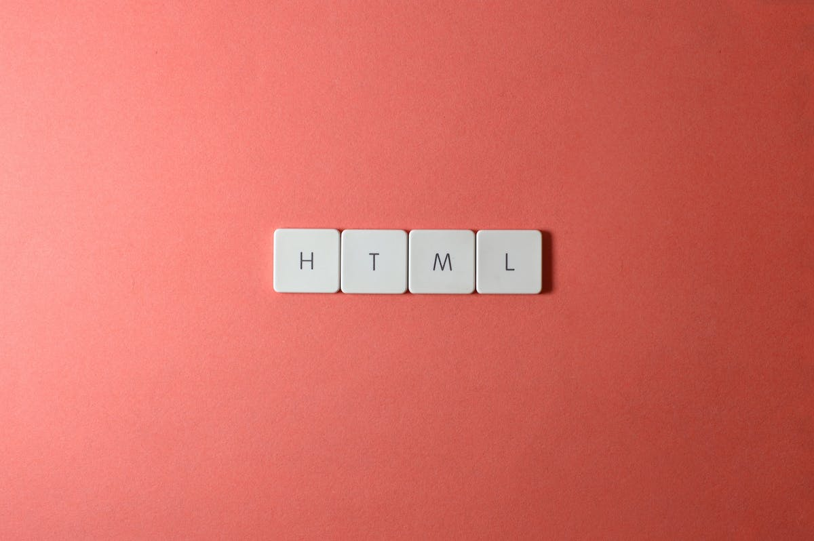
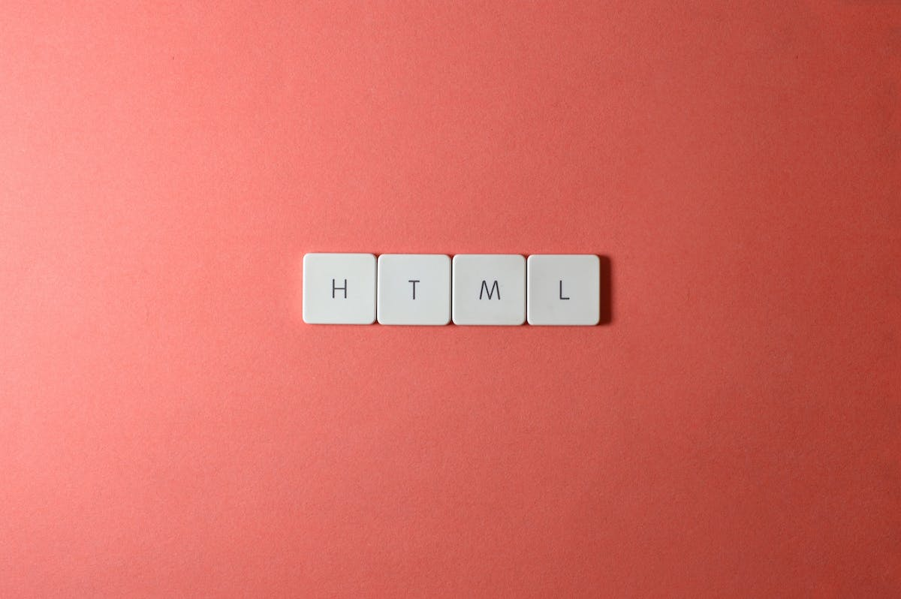

HTML is one of the most popular markup languages developed and created by Sir Tim Berners-Lee, who also created the World Wide Web in 1989. HTML officially launched in 1993 and has continuous updates and added new features for functionality. The most popular version of HTML was HTML 4.01 which became the standard markup language in 1999.

CSS Cascading style sheets are the Web's answer in the mid 1990's. Cascading style sheets (CSS) were the World Wide Web Consortium's answer to the development, in the mid-1990s, of a number of presentational HTML elements that threatened to blur the distinction between the appearance of a document, i.e. what the document looks like, and its underlying structure and meaning. The first W3C CSS (CSS 1) was released in 1996, providing coders with the means to separate the code that defined the appearance of a web page from the code that defined its content.
 

© Aug 23th, 2022